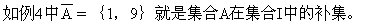
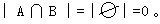

第十二讲 容斥原埋
在很多计数问题中常用到数学上的一个包含与排除原理，也称为容斥原理.为了说明这个原理，我们先介绍一些集合的初步知识。
在讨论问题时，常常需要把具有某种性质的同类事物放在一起考虑.如：A=｛五（1）班全体同学｝.我们称一些事物的全体为一个集合.A＝{五（1）班全体同学}就是一个集合。
例1 B＝｛全体自然数｝=｛1，2，3，4，…｝是一个具体有无限多个元素的集合。
例2 C=｛在1，2，3，…，100中能被3整除的数｝＝（3，6，9，12，…，99｝是一个具有有限多个元素的集合。
集合通常用大写的英文字母A、B、C、…表示.构成这个集合的事物称为这个集合的元素.如上面例子中五（1）班的每一位同学均是集合A的一个元素.又如在例1中任何一个自然数都是集合B的元素.像集合B这种含有无限多个元素的集合称为无限集.像集合C这样含有有限多个元素的集合称为有限集.有限集合所含元素的个数常用符号|A|、|B|、|C|、…表示。
记号A∪B表示所有属于集合A或属于集合B的元素所组成的集合.就是右边示意图中两个圆所覆盖的部分.集合A∪B叫做集合A与集合B的并集.“∪”读作“并”，“A∪B”读作“A并B”。
例3 设集合A=｛1，2，3，4｝，集合B=｛2，4，6，8｝，则A∪B=｛1，2，3，4，6，8｝.元素2、4在集合A、B中都有，在并集中只写一个。
记号A∩B表示所有既属于集合A也属于集合B中的元素的全体.就是上页图中阴影部分所表示的集合.即是由集合A、B的公共元素所组成的集合.它称为集合A、B的交集.符号“∩”读作“交”，“A∩B”读作“A交B”.如例3中的集合A、B，则A∩B=｛2，4｝。
下面再举例介绍补集的概念。
例4 设集合I=｛1，3，5，7，9｝，集合A=｛3，5，7｝。
补集（或余集），如右图中阴影部分表示的集合（整个长方形表示集合I）.


对于两个没有公共元素的集合A和B，显然有|A∪B|=|A|+|B|。
例如，A=｛1，2，…，100｝，B=｛101｝，则
所以|A∪B|＝101＝100＋1=|A|＋|B|。
如果集合A与B有公共元素，例如
A＝｛1，2，…，100｝，B＝｛90，91，…，101｝，则A∩B＝（90，91，…，100｝，A∪B={1，2，…，101}.此时，|A∪B|与|A|+|B|有什么关系呢？在这个例中，|A∪B|=101，|A|＋|B|＝100＋12=112。
所以|A∪B|=|A|+|B|-11
我们注意到，11恰为A∩B的元素个数.这是合理的，因为在求|A∪B|时，90，91，…，100这11个数各被计入一次，而在求|A|＋|B|时，这11个数各被计入两次（即多算了一次），并且这11个数组成的集合恰为A∩B.因此得到
|A∪B|=|A|+|B|-|A∩B|，（1）
这就是
关于两个集合的容斥原理：集合A与B的并的元素个数，等于集合A的元素个数与集合B的元素个数的和，减去集合A与B的交的元素个数。
（1）是容斥原理的第一个公式.我们还可以用右图来说明.如图我们用N1、N2、N3分别表示A∪B中互不重叠的部分的元素个数。可见：|A|=N1＋N3，|B|=N2＋N3，|A∩B|=N3.因此|A∪B|=N1＋N2＋N3＝（N1＋N3）+（N2＋N3）-N3=|A|+|B|-|A∩B|。
我们知道，当集合A与B没有公共元素时，有
|A∪B|＝|A|+|B|.
实际上这是公式（1）的特殊情形，因为此时

例5 桌上有两张圆纸片A、B.假设圆纸片A的面积为30平方厘米，圆纸片B的面积为20平方厘米.这两张圆纸片重叠部分的面积为10平方厘米.则这两张圆纸片覆盖桌面的面积由容斥原理的公式（1）可以算出为：｜A∪B｜=30＋20-10＝40（平方厘米）。
例6 求在1至100的自然数中能被3或7整除的数的个数。
分析 解这类问题时首先要知道在一串连续自然数中能被给定整数整除的数的个数规律是：在n个连续自然数中有且仅有一个数能被n整除.根据这个规律我们可以很容易地求出在1至100中能被3整除的数的个数为33个，被7整除的数的个数为14个，而其中被3和7都能整除的数有4个，因而得到
解：设A=｛在1～100的自然数中能被3整除的数｝，
B＝｛在1～100的自然数中能被7整除的数｝，则
A∩B=｛在1～100的自然数中能被21整除的数｝。
∵100÷3＝33…1，∴｜A｜＝33。
∵100÷7＝14…2，∴｜B｜=14。
∵100÷21＝4…16，∴｜A∩B｜=4。
由容斥原理的公式（1）：｜A∪B｜＝33＋14-4=43。
答：在1～100的自然数中能被3或7整除的数有43个。
例7 求在1～100的自然数中不是5的倍数也不是6的倍数的数有多少个？
分析 如果在1～100的自然数中去掉5的倍数、6的倍数，剩下的数就既不是5的倍数也不是6的倍数，即问题要求的结果。
解：设A＝｛在1～100的自然数中5的倍数的数｝，
B=｛在1～100的自然数中6的倍数的数｝，
数.为此先求｜A∪B｜。
∵100÷50=20，∴｜A｜=20
又∵100÷6＝16…4，∴｜B｜=16
∵100÷30＝3…10，
∴｜A∩B｜=3，
｜A∪B｜=｜A｜+｜B｜-｜A∩B｜=20＋16-3＝33。
答：在1～100的自然数中既不是5的倍数又不是6的倍数的数共67个。
我们也可以把公式（1）用于求几何图形的面积.这时，A和B是平面上的两个点集（即点的集合），都是几何图形.｜A｜，｜B｜，…分别表示A的面积，B的面积，…。
例8 设下面图中正方形的边长为1厘米，半圆均以正方形的边为直径，求图中阴影部分的面积。
分析 如图，四个直径为1厘米的半圆不但盖住了正方形，还有四个重叠部分.这正好是要求的阴影部分的面积.或者，用A表示上、下两个半圆，用B表示左、右两个半圆，则A∪B为边长为1厘米的正方形，A∩B为图中阴影部分.由（1）可得
｜A∩B｜=｜A｜+｜B｜-｜A∪B｜，
因此可求出阴影部分的面积。
解法1：∵大正方形面积=4个直径为1厘米的半圆面积-阴影图形面积
-1×1＝0.57（平方厘米）。
∴上页图（a）中阴影面积=0.57（平方厘米）。
答：阴影面积为0.57平方厘米。
上面的例子是把一组事物按两种不同的性质来分类后，求具有其中一种性质的元素个数问题.如果把一组事物按三种不同性质来分类后，求具有其中一种性质的元素个数的公式该是什么样的呢？我们仍用图形来说明它具有与公式（1）类似的公式：
｜A∪B∪C｜=｜A｜＋｜B｜＋｜C｜-｜A∩B｜-｜A∩C｜-｜B∩C｜＋｜A∩B∩C｜， （2）
其中A∪B∪C=A∪（B∪C），A∩B∩C=A∩（B∩C）.
右图中三个圆A、B、C分别表示具有三种不同性质的集合，并如图用M1、M2、M3、…、M7表示由三个圆形成的内部互不重叠的部分所含元素的个数，可见：
｜A∪B∪C｜＝M1＋M2+…＋M7
＝（M1＋M4＋M6＋M7）+（M2＋M4＋M5＋M7）+（M3＋M5＋M6＋M7）-[（M4+M7）+（M5+M7）+（M6＋M7）]＋M7
＝｜A｜＋｜B｜＋｜C｜-｜A∩B｜-｜B∩C｜-｜A∩C｜+｜A∩B∩C｜，
即公式（2）成立。
事实上这个规律还可推广到按多种性质来分类的情形.设集合M中的每个元素至少具有t种性质中的一种，用n1表示各个具有1种性质的集合中的元素个数的和，n2表示各个具有2种性质的集合中元素个数的和，…，nt表示具有t种性质的集合中元素的个数，则集合M中元素的个数m为：
m=n1-n2＋n3-n4+…±nt
最后一项当t为偶数时取“-”号，否则取“＋”号。
例9 某校有学生960人，其中510人订阅“中国少年报”，330人订阅“少年文艺”，120人订阅“中小学数学教学报”；其中有270人订阅两种报刊，有58人订阅三种报刊.问这个学校中没有订阅任何报刊的学生有多少人？
解：设A＝｛订“中国少年报”的学生｝，
B=｛订“少年文艺”的学生｝，
C=｛订“中小学数学教学报”的学生｝，
I=｛全校学生｝，
=212（人）。
答：全校有212名学生没订阅任何报刊。
解：如右图，设这次竞赛共有k道题，用集合A、B分别表示甲、乙答错的题目.图中字母a、b、c、d分别表示集合A、B在全部题目作成的集合I中形成的各个无重复部分的元素个数，可见d为问题所求.依题意列方程：

注意到a、b、c、d均表示题目的道数，应为自然数或零，因此k为12的倍数：12、24、….
∴k=12，b＝1，c＝2，a=1，d=12-（a＋b＋c）=12-（1＋2＋1）=8（道）。答：甲、乙两人都对的题共8道。